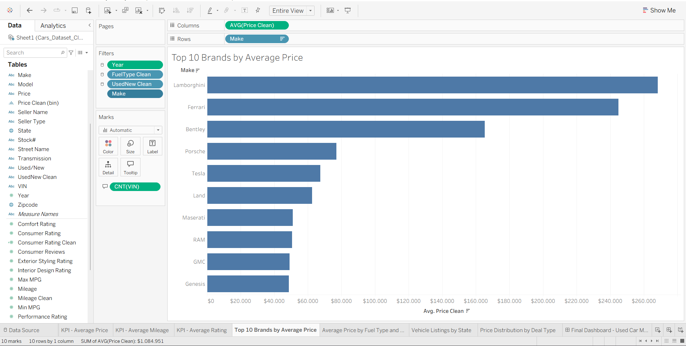
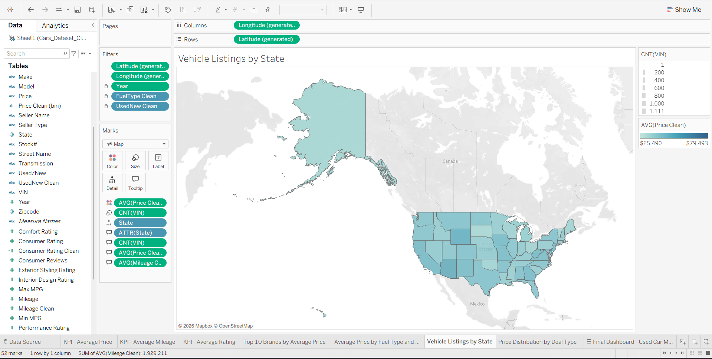
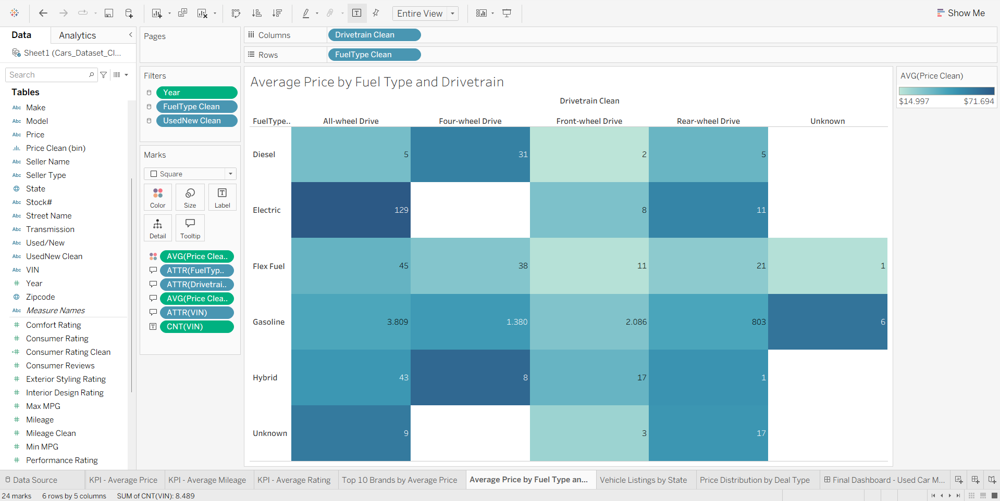
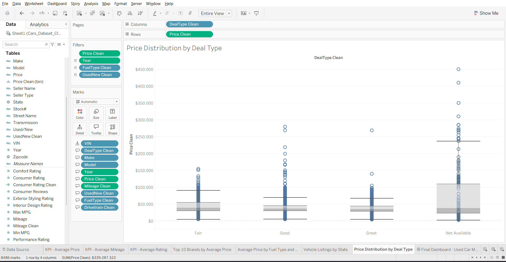
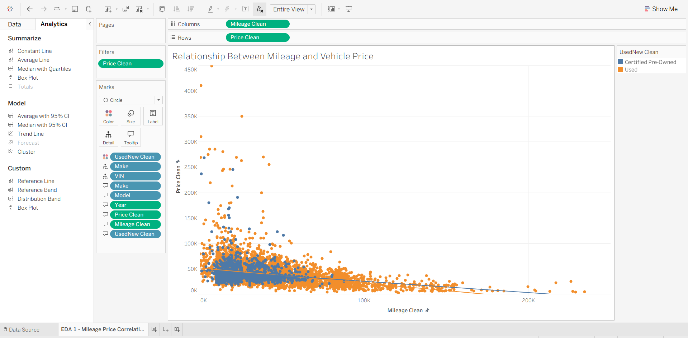
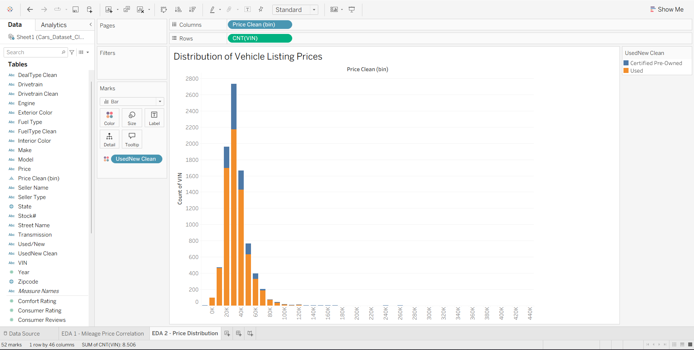
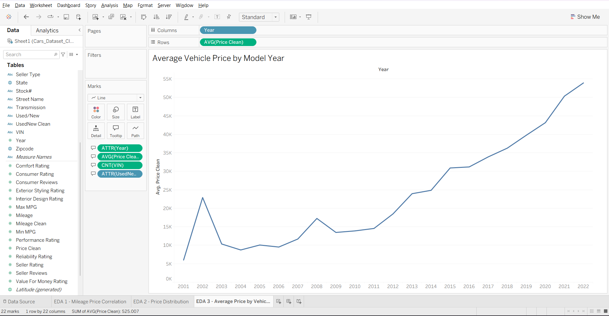

Remove duplicate rows
The report documents 9,379 original rows and the removal of 872 duplicates, leaving 8,507 at that stage. The final Excel file supplied with this project contains 8,506 rows.
DATA VISUALIZATION / BUSINESS ANALYTICS
Exploring asking prices across vehicle segments.
An individual coursework project combining data preparation in Excel, exploratory analysis, and a Tableau dashboard for comparing vehicle listings by brand, model year, mileage, and other characteristics.
THE ANALYTICAL QUESTION
The project uses the Cars Raw Dataset to explore listing prices alongside brand, model year, mileage, vehicle condition, fuel type, drivetrain, location, and deal category. The intended audience includes car buyers, dealership managers, and automotive analysts comparing vehicle segments.
I prepared the data in Excel, developed exploratory views, and assembled the Tableau dashboard. The submitted workbook contains 11 worksheets: four KPI views, four dashboard charts, and three exploratory charts, combined with a dashboard and a brand-selection action.
The analysis describes the supplied listing sample. Prices are asking prices in USD, and model years do not represent transaction dates.
DASHBOARD
Four KPI cards and four charts connect the overall sample to vehicle segments.

Original screenshot from the report. Its Year filter is set to model years 2005–2022, showing 8,489 listings, average price $39,982, average mileage 37,014, and average rating 4.70/5. The full Excel source contains 8,506 listings across model years 2001–2022.

Average asking price supports comparisons between brand categories. Some groups contain few listings, so the ranking should be interpreted alongside sample size.

The map uses average price for color and includes listing counts and mileage in its tooltip settings. Records without resolved coordinates are excluded from the map.

Color represents average price; the numbers inside the cells are listing counts. This keeps group size visible when comparing vehicle configurations.

Box plots reveal the spread within each category. A deal label alone does not establish affordability or equivalent vehicle characteristics.
DATA PREPARATION
Six cleaned fields extend the 32 original columns in the supplied Excel file.
The report documents 9,379 original rows and the removal of 872 duplicates, leaving 8,507 at that stage. The final Excel file supplied with this project contains 8,506 rows.
Price_Clean removes currency formatting for numeric analysis; Mileage_Clean provides a numeric mileage field. Three “Not Priced” records still have blank cleaned prices and are excluded from price averages.
Cleaned condition, fuel, drivetrain, and deal fields consolidate inconsistent labels. Examples include Certified Pre-Owned, full drivetrain names, and Not Available for missing deal categories.
The workbook derives Consumer Rating Clean as ConsumerRating / 10 and defines $10,000 price bins. These calculated fields are separate from the 38 columns in the Excel source.
| Scope | Model years | Listings | Numeric prices | Average price |
|---|---|---|---|---|
| Full Excel source | 2001–2022 | 8,506 | 8,503 | $39,922 |
| Report screenshot filter | 2005–2022 | 8,489 | 8,486 | $39,982 |
The report screenshot covers model years 2005–2022. The supplied Tableau workbook saves a 2001–2022 year range, so its current view may differ from the screenshot. Price averages exclude the three blank cleaned prices; they are not treated as zero.
EXPLORATORY ANALYSIS
Three exploratory charts support the report's interpretation.
The scatter plot shows a negative association between usage and asking price, with substantial variation across listings.
Most valid prices fall in the $20,000–$50,000 range. A smaller group of expensive listings stretches the distribution upward.
Average asking prices generally rise across newer model years. This comparison reflects the vehicles in each group, rather than market price changes over calendar time.
Brand averages, fuel–drivetrain combinations, and deal-type distributions provide different views. Group size and vehicle mix matter when interpreting each comparison.

The report identifies a negative association between mileage and asking price. The relationship describes this sample and does not isolate the effects of brand, model year, or other characteristics.

The histogram uses $10,000 bins. Most valid prices in the supplied data fall between $20,000 and $50,000, with a smaller high-price tail.

Newer model years generally have higher average asking prices in this sample. Year describes the vehicle model year; it is not a transaction date or a measure of sales growth over time.
DASHBOARD INTERACTION
Controls and actions documented in the Tableau workbook.
| Control | Purpose and scope |
|---|---|
| Fuel type | Filter the dashboard using standardized fuel categories. |
| Model year | Select a vehicle model-year range. |
| Vehicle condition | Compare Used and Certified Pre-Owned listings. |
| Brand selection | Select a bar to filter the map, heatmap, and deal-type chart. The action excludes the KPI cards and the brand ranking. |
| Hover details | Inspect configured values such as average price, listing count, and vehicle characteristics. |
Images on this page preserve the submitted report. The Tableau and presentation buttons use the links supplied in that report.
INTERPRETATION
These findings describe listing prices in a specific dataset. The sample is not a measure of completed sales, and associations do not establish causation. Some brand categories contain very few records, which can make their averages sensitive to individual listings.
Missing prices are kept separate from zero values. The map excludes unresolved coordinates, and the model-year comparison describes vehicle age groups rather than a sales timeline.
Dataset source listed in the report: Cars Raw Dataset ↗Explore more of my design, data, and systems projects.
Back to all projects